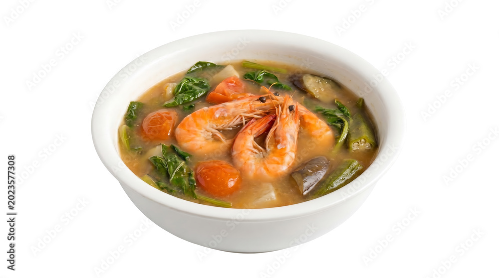

Sinigang is a beloved Filipino comfort food famous for its distinct sour and savory broth. It traditionally features a variety of meats like pork (sinigang na baboy), shrimp, or fish, simmered alongside local vegetables like radish, eggplant, long green beans (sitaw), kangkong (water spinach), and taro (gabi), which gives the soup a thick, hearty texture.
The signature sour flavor comes from a base of tamarind (sampalok), though other souring fruits like kamias or guava are sometimes used. It is a deeply soothing dish that is best enjoyed piping hot, served with a side of steamed white rice and a small saucer of fish sauce (patis) with crushed chili peppers for an extra kick.